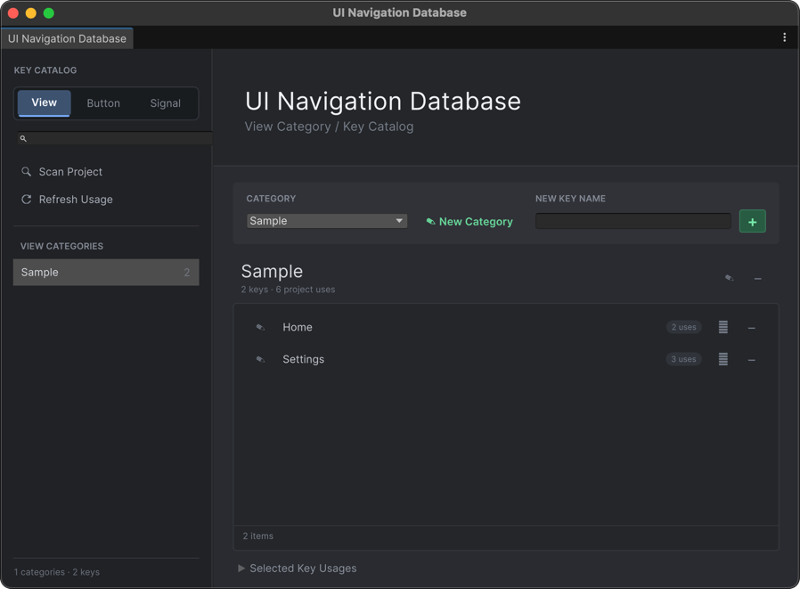

키 카탈로그
Tools > UI Navigation > Key Catalog에서 UXML, Navigation Graph, 런타임 Signal이 함께 사용하는 주소를 관리합니다. 카탈로그는 참조를 일관되게 유지하는 저작 도구이며, View를 생성하거나 직접 화면을 전환하지는 않습니다.

주소 규칙
모든 주소는 Category / Key 쌍입니다. 앞뒤 공백은 제거되며 대소문자를 구분합니다. 예를 들어 Demo / Home과 demo / Home은 서로 다른 주소입니다.
주소는 용도에 따라 세 탭으로 분리됩니다.
| 탭 | 이 탭에 등록하는 사용처 |
|---|---|
| View | NavElement, UI 노드의 Show/Hide 명령, UI View 출력 |
| Button | NavButton, NavToggle, UI Button 및 Toggle 출력, 같은 종류의 Portal 조건 |
| Signal | UINavigationEvents.RequestSignal, Signal 출력, 같은 종류의 Portal 조건 |
Note
NavButton의 UXML 속성 이름은 signal-category, signal-key이지만 Button Signal을 발생시키므로 주소는 Button 탭에 등록합니다.
주소 생성과 연결
- View, Button, Signal 중 알맞은 탭을 선택합니다.
- Category를 추가한 뒤 그 안에 Key를 하나 이상 추가합니다.
- UI Builder 또는 Navigation Graph Inspector의 선택기에서 해당 주소를 선택합니다.
시작하기 예제에서는 연결 전에 다음 주소를 등록합니다.
- View:
Demo / Home,Demo / Settings - Button:
Demo / OpenSettings
먼저 등록해 두면 UXML과 Graph에서 자유 입력으로 인해 철자가 달라지는 문제를 예방할 수 있습니다.
Scan Project와 Refresh Usage
Scan Project는 프로젝트의 모든 UXML VisualTreeAsset과 .uinavgraph를 검사합니다. NavElement, NavButton, NavToggle, UI 노드의 View 명령과 출력, Portal 조건에서 사용 중인 주소를 찾아 올바른 탭에 누락 항목을 추가합니다.
Refresh Usage는 같은 지원 자산을 다시 검사해 카탈로그를 변경하지 않고 사용 횟수만 갱신합니다. Key를 선택하면 각 참조의 자산 경로와 사용 문맥을 확인할 수 있습니다.
프로젝트 스캔은 C# 문자열 리터럴, 사용자 정의 직렬화 필드, 애플리케이션 전용 주소 형식을 분석하지 않습니다. 코드에서만 사용하는 주소는 직접 등록하세요.
안전하게 이름 변경 및 삭제
Category 또는 Key의 이름을 바꾸면 적용 전에 영향을 받는 UXML과 Graph 자산을 보여줍니다. 승인하면 카탈로그와 지원되는 참조를 함께 수정합니다. 수정 중 실패하면 변경된 원본 파일을 메모리 백업에서 복원합니다.
삭제는 다르게 동작합니다. 카탈로그 항목만 제거하며 기존 UXML과 Graph 문자열은 남아 미등록 참조로 표시됩니다. 이후 Scan Project를 실행하면 다시 등록되므로, 기존 사용처까지 옮기려는 경우에는 삭제가 아니라 이름 변경을 사용하세요.
저장 위치와 버전 관리
카탈로그는 ProjectSettings/UITKNavigationKeyCatalog.asset에 저장됩니다. 팀이 같은 주소 목록을 사용하도록 이를 참조하는 UXML 및 Graph 자산과 함께 커밋하세요. 이 파일은 Editor 전용 저작 자산이라 Player 빌드에는 포함되지 않으며, 런타임은 직렬화된 Category / Key 값으로 주소를 비교합니다.